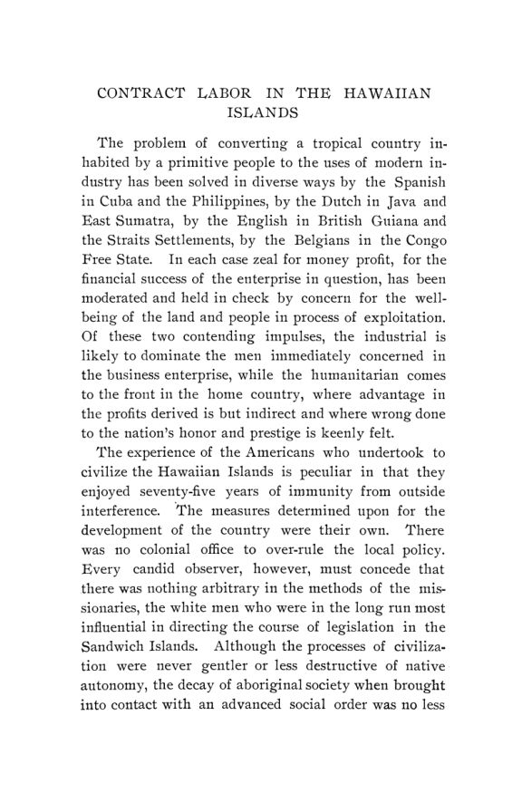

Coman, 1903: meio século de trabalho por contrato no Havaí
Leitura: 9 min
Em 1903, Katharine Coman reconstituiu as leis, os salários e os custos do trabalho por contrato nas plantações de açúcar do Havaí, de 1850 à anexação. A história, os números e o argumento econômico, descritos.


Plantação de Hana, ilha de Maui, 1º de setembro de 1874. Um trabalhador chamado Kealaula assina contrato por dezoito meses. Cada mês tem 26 dias de trabalho, cada dia não menos de dez horas. Em troca, os donos pagam oito dólares por mês e fornecem poi, a pasta de taro, mas não carne. O documento aparece em nota como modelo de contrato na monografia de Katharine Coman.
The History of Contract Labor in the Hawaiian Islands saiu em agosto de 1903 como volume 4, nº 3, da terceira série das Publications of the American Economic Association, em 61 páginas. No prefácio, datado de Cedar Hill, Waltham, Massachusetts, em 20 de maio de 1903, a autora conta que o estudo resultou de uma visita às ilhas e de conversas com plantadores e legisladores. Agradece ao ex-procurador-geral W. O. Smith o acesso à legislação antiga e aos autos judiciais, e registra que a bibliografia sobre o tema ainda era muito curta.
Por que faltava mão de obra?
Coman parte de duas condições. A primeira é técnica: segundo W. C. Stubbs, diretor da estação experimental agrícola da Louisiana, as plantações havaianas rendiam em média cinco toneladas de açúcar por acre, contra uma e meia na Louisiana e de uma a duas em Cuba, embora a cana levasse de três a seis meses a mais para amadurecer. Cortada, a cana precisava chegar ao engenho em três dias, ou azedava. Cada máquina nova exigia mais área e, com ela, mais gente disponível no momento exato da colheita.
A segunda condição é demográfica. Uma lei de 1850 registrava que a população nativa diminuía e que a falta de braços encarecia os alimentos, e proibia os súditos nativos de deixar as ilhas sem permissão. No mesmo ano, a Lei de Senhores e Servos (Master and Servants Act) legalizou o aprendizado e a servidão por contrato. Um adulto podia se obrigar por até cinco anos; o desertor era devolvido ao patrão e devia servir o dobro do tempo de ausência; quem se recusasse podia ser preso com trabalhos forçados até aceitar. Contratos firmados no exterior valiam, limitados a dez anos. Para Coman, essa é a base legal de todo o sistema.
Quanto custava um trabalhador contratado?
O primeiro carregamento, em 1852, trouxe 180 trabalhadores chineses, contratados por cinco anos a três dólares por mês, além de passagem paga, comida, roupa e abrigo. O transporte custava 50 dólares por homem e a manutenção era estimada em cinco dólares mensais. Coman calcula o custo total do trabalho em cerca de nove dólares por mês.
Em 1865, a Junta de Imigração enviou o médico Hillebrand em viagem pela Ásia; seu primeiro passo foi organizar a vinda de 500 chineses. O transporte, de 59 dólares, era pago pelo plantador, mas, exceto o bônus e as despesas da Junta, era tratado como adiantamento e descontado do salário mês a mês. Com quatro dólares por mês e dois de presente de Ano Novo, o trabalhador ganhava 150 dólares em três anos, mais oito de bônus; pago o adiantamento de 41, ficava com 119. Como comida, abrigo e roupa eram fornecidos, a autora considera a maior parte dessa soma ganho líquido.
Coman explica a diferença pela composição: a maioria dos contratados cumpria o primeiro termo, ou só encontrava emprego sob contrato e com salário baixo. Os termos também mudaram com a escassez. Em 1877 a Junta garantia aos portugueses dez dólares por mês, com comida e alojamento; em 1884 já oferecia dezesseis, com alojamento e lenha mas sem comida, mais um auxílio por filho. No mesmo ano, a firma Hoffnung, de Londres, escrevia que, segundo seu agente em São Miguel, os salários tinham dobrado e que o Brasil e outros governos disputavam os mesmos emigrantes. Os embarques de portugueses cessaram depois de 1888.
Como o Estado regulava o contrato?
A partir de 1872, todo contrato tinha de ser reconhecido pelas duas partes diante de um funcionário do governo, que registrava nomes, prazo, adiantamento e salário. O contrato era pessoal: o trabalhador não ficava preso à terra, e o vínculo cessava com a morte do patrão ou a venda da plantação. Uma lei de 1876 fixou em nove horas o dia de trabalho quando o contrato não o definia; uma de 1880 estabeleceu padrões sanitários para os alojamentos, com 300 pés cúbicos de ar por adulto; uma de 1884 proibiu descontar por tempo perdido mais do que o valor desse tempo. Inspetores da Junta visitavam as plantações quatro vezes por ano. A autora compara o sistema ao da Guiana Inglesa, apontando pontos a favor de cada um.
A política de origem dos trabalhadores oscilou entre a demanda dos plantadores e as restrições do governo. Os chineses passaram de 5.916 em 1878 para 19.217 em 1889. Em 1883 vieram as primeiras restrições, em 1886 uma lei de exclusão, e em 1895 uma licença condicionada: para cada dez chineses, o plantador devia trazer um trabalhador europeu ou americano. A convenção com o Japão, de 1886, fez do governo havaiano responsável pelos contratos, com intérpretes e médicos japoneses.
Como se fazia cumprir um contrato sem garantia?
Aqui está o argumento econômico central da monografia. O trabalhador chegava sem propriedade e endividado pela passagem; o plantador só adiantaria passagem e emprego se tivesse um direito exigível por prazo definido. A autora resume o problema:
“Obviamente, ele nada tem a perder senão a liberdade” (“Obviously he has nothing to forfeit but his freedom”)
A Suprema Corte havaiana tratou o dilema em 1873, em Wood contra Afo, e em 1891, no caso do trabalhador japonês Mioshi, e manteve a execução penal. Sobre a alternativa de processar o desertor por perdas e danos, a decisão de 1873 diz:
“Isso pode ser considerado, na maioria dos casos, mero escárnio” (“This may be regarded in most cases as mere mockery”)
Coman situa o caso numa tendência mais longa: o fim da servidão por contrato nas colônias atlânticas, a reforma inglesa que substituiu prisão por multa e, em 1875, a lei de Empregadores e Trabalhadores, a lei prussiana de 1869 e, nos Estados Unidos, o voto vencido do juiz Harlan em Robertson contra Baldwin, de 1896, seguido da emenda de 1898 à lei de navegação. A Lei Orgânica de 1900, que deu governo ao território do Havaí, vedou a execução específica de contratos de trabalho e anulou os firmados desde 12 de agosto de 1898. Pelo comissário do trabalho dos Estados Unidos, das 22 greves registradas em 1900, 20 foram de trabalhadores de plantação.
O que substituiu o contrato?
A resposta dos plantadores foi a “companhia de contrato”, uma espécie de parceria coletiva. O plantador fornecia terra, muda, água, adubo e ferramentas, fazia as tarefas que exigiam máquinas e adiantava dez dólares mensais a cada trabalhador. Um campo de 50 a 100 acres era arrendado a um grupo de uma dúzia ou mais de homens, que cuidavam da cana e eram pagos pelo produto. O preço por peça acompanhava o do açúcar: dois dólares por tonelada de cana ou sete por tonelada de açúcar, cerca de um sétimo do valor da safra.
Coman conclui que o contrato, como administrado pela Junta, serviu aos trabalhadores tanto quanto aos plantadores, e cita o censo de 1900: as terras agrícolas em que chineses tinham participação valiam 2.700.335 dólares, e os japoneses pagavam imposto sobre 1.268.180 dólares de bens pessoais. A autora registra também o custo do sistema: a importação de milhares de trabalhadores sob contrato semisservil desestimulou a imigração livre, e nesse ponto ela o compara ao trabalho escravo dos estados do Sul. E conclui que a execução penal é um anacronismo na ordem industrial moderna.
Na minha leitura
Na minha leitura, a monografia descreve com clareza um problema clássico de financiamento: alguém precisa pagar a passagem de um trabalhador sem patrimônio, e o credor precisa de uma garantia. A pena de prisão fazia o papel da garantia que o trabalhador não tinha. Quando ela foi abolida, a garantia reapareceu em outra forma: as companhias de emigração japonesas passaram a adiantar a passagem e a exigir fiança do emigrante ou de parentes, confiscada em caso de fuga. O problema econômico continuou; mudou quem o carregava.
A companhia de contrato é o trecho mais interessante para a teoria dos contratos. Ao trocar salário fixo por pagamento pelo produto, indexado ao preço do açúcar, os plantadores transferiram parte do risco e alinharam incentivos, e a autora relata ganho de produção e de renda. Os números de salário, porém, comparam contratados e livres sem separar experiência e tempo de serviço, ressalva que a própria Coman faz.
Glossário
- Trabalho por contrato (indentured labor)
- trabalho prestado por prazo fixo, em geral em troca de passagem adiantada, com obrigação legal de cumprir o termo.
- Master and Servants Act
- lei havaiana de 1850 que regulou aprendizado e servidão por contrato.
- Execução penal do contrato
- uso de prisão ou multa criminal para obrigar o trabalhador a cumprir o contrato.
- Execução específica
- ordem judicial para cumprir a prestação contratada, e não apenas pagar indenização.
- Junta de Imigração (Board of Immigration)
- órgão do governo havaiano que regulava origem, transporte e contratos dos trabalhadores importados.
- Companhia de contrato
- grupo de trabalhadores que arrendava um campo de cana e era pago pela produção.
- Poi
- pasta de raiz de taro, alimento básico havaiano.
Fontes
- The History of Contract Labor in the Hawaiian Islands (pp. 1–61). JSTOR · Internet Archive (PDF)
- Sumário da edição no JSTOR: Publications of the American Economic Association, 3ª série, vol. 4, nº 3.
Documento em domínio público (EUA, publicado antes de 1931), via JSTOR Early Journal Content e Internet Archive. Resumo e comentário do autor deste site, sem afiliação com a American Economic Association. Encontrou um erro? Escreva: a correção é publicada no próprio texto, com data.
← Nº 66 · Bushee, 1903: moradia, trabalho e mortalidade na Boston imigrante Nº 68 · Kinsman, 1903: sessenta anos de imposto de renda estadual →